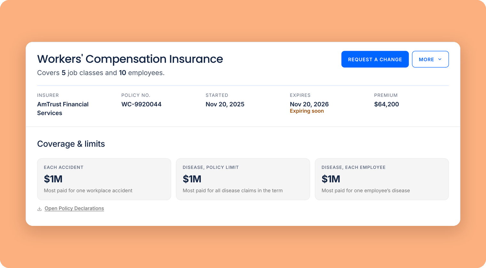
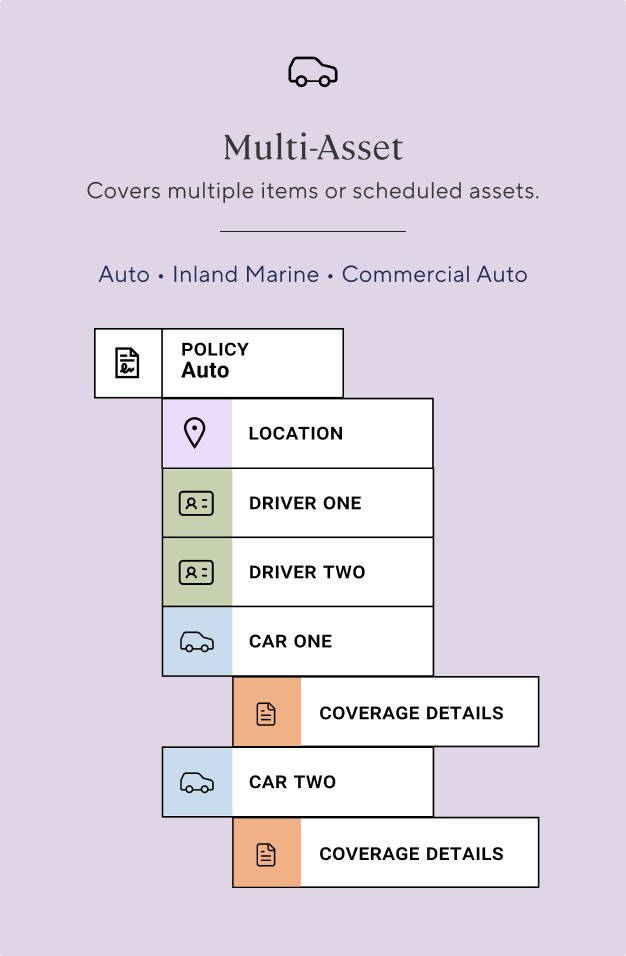
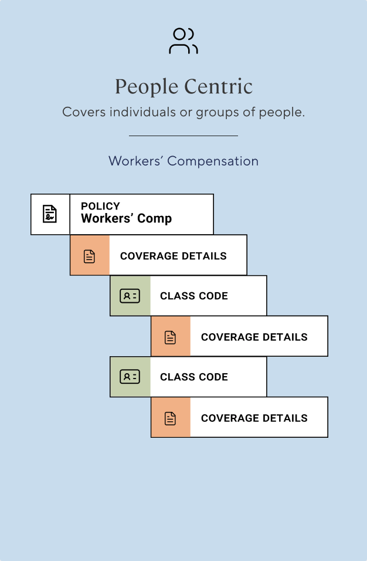
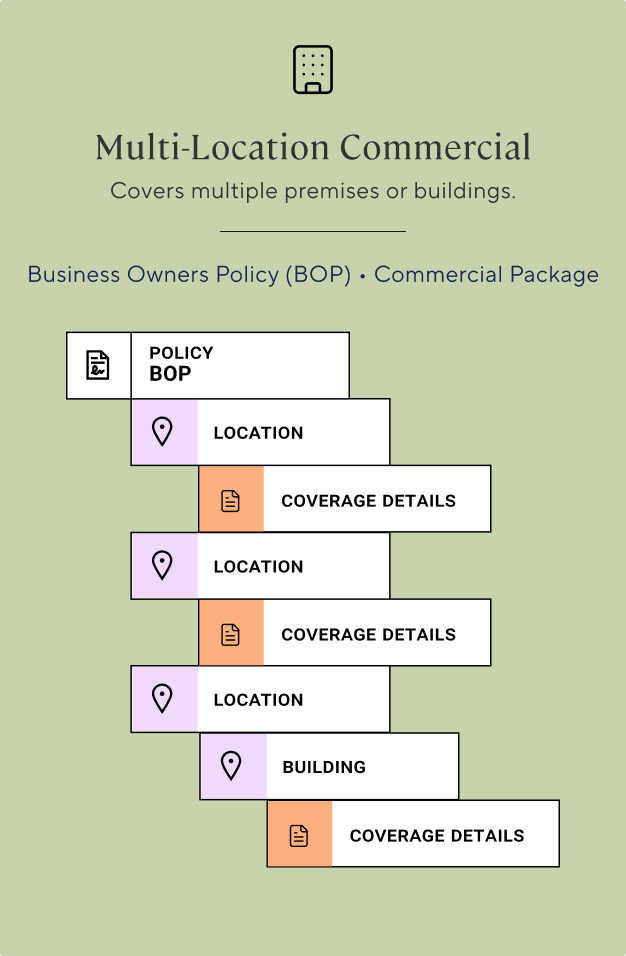
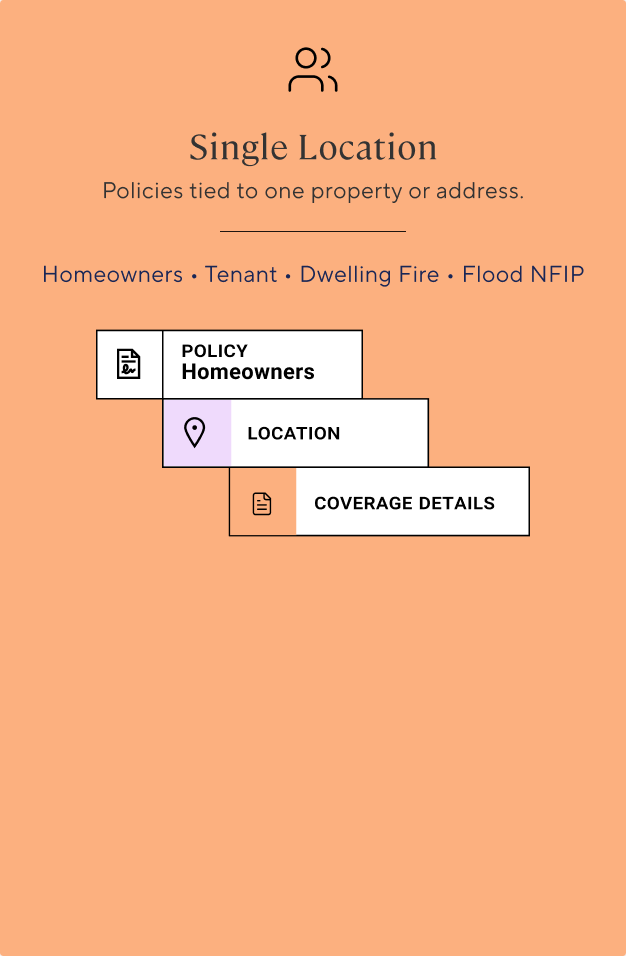
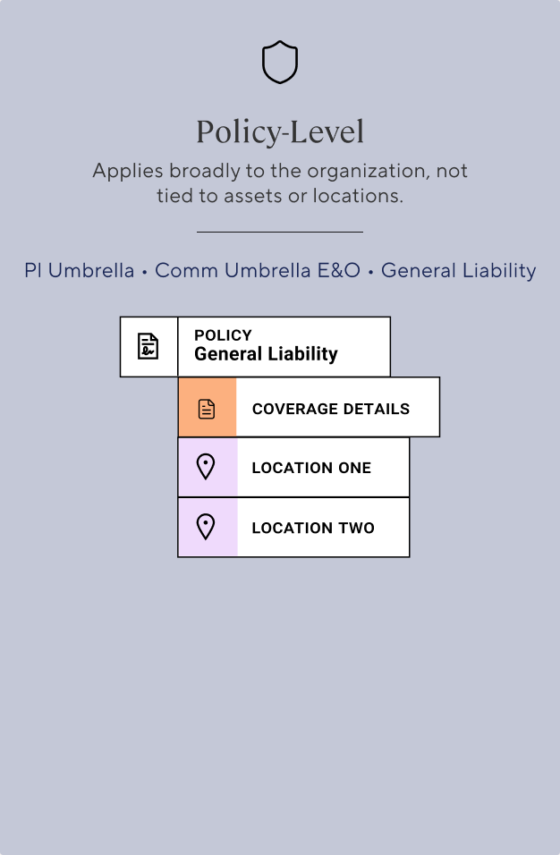
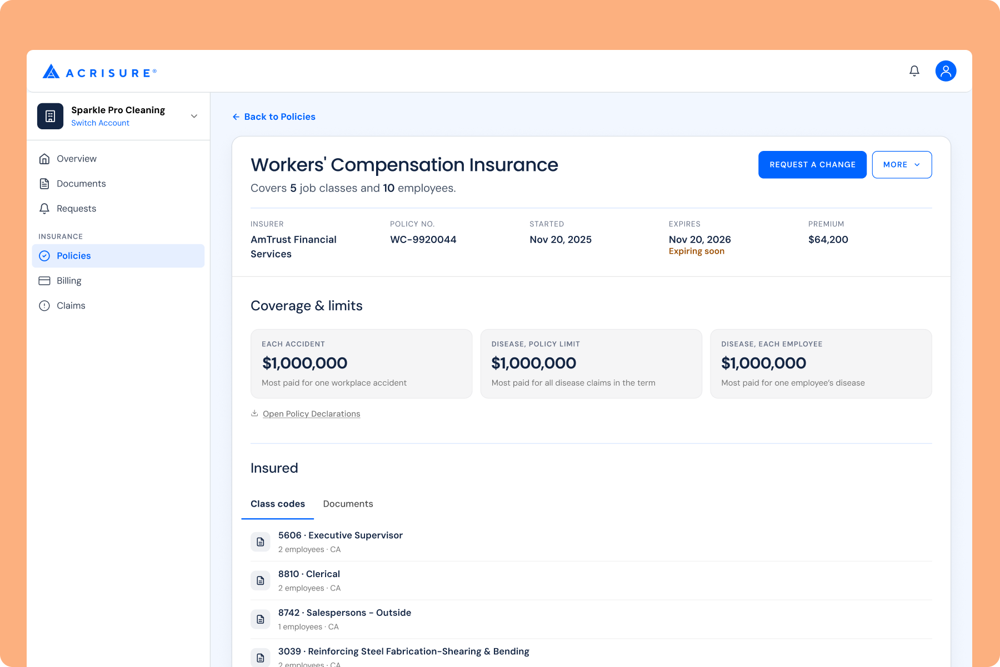
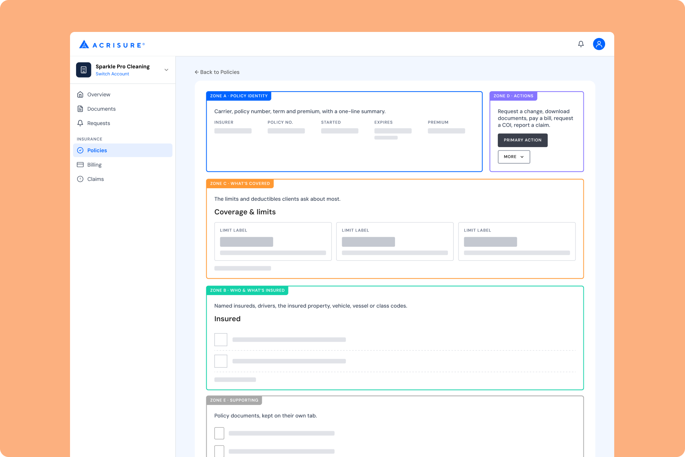

Creating One System for Hundreds of Coverage Types
Rebuilding a client portal for hundreds of coverage types, and deciding how much each policy page should show.

The Situation
Acrisure had grown by rolling up more than 1,000 businesses, each bringing its own systems, data, and definition of what "client" even meant. The only client-facing option was a third-party tool with mixed adoption. No client, servicer, or business team had ever had one place to see everything a given client held.
Leadership's goal was three-fold:
Clients
Manage everything in one place instead of juggling logins and calls.
Servicers
Spend less time on calls and emails.
The business
Cut the tickets self-service could absorb, and support cross-selling and risk management across a client's accounts.
What the first version taught me
We shipped a first version fast, on the only design system available, which was built for marketing pages. To handle hundreds of coverage types, I grouped them into five structural archetypes, so each new policy type reused a pattern instead of needing new design work. It held up: Employee Benefits slotted into one with no new design work required.





The five policy archetypes, each with its underlying data structure
What it didn't solve was what clients actually needed to see. The first version was organized around how the data is structured, and every field carried the same weight. One real policy showed 24 identical cards for additional interests. Showing everything also let insurance jargon through, including abbreviations that meant nothing to clients. With hundreds of policy types there were too many edge cases, and we couldn't hand-hold each one or explain every field. I had modeled the data. Clients needed answers.
The next platform
Then the business moved the portal to a new platform, so we're rebuilding it from scratch. The first time, we borrowed a design system to hit a deadline. This time we're building our own, and there are two of us designing it.
I'm designing the top 20 policy types one at a time. Everything else falls into two catch-alls, one personal and one commercial.
The decision: how much should a policy page show?
Two starting assumptions
Product's starting assumption was reasonable: if we have the data, show it. Ours was the opposite. The more a page shows, the more confused clients get, and the more they call.
What settled it
The team had already built principles for the portal from our own research: surveys, research with servicers across the company, a handful of user interviews, and outside industry research. The ones that mattered here were clarity over completeness, never leave users in the dark, and blank is not an answer.
Several operations leaders who explain coverage to clients told us they give the ABCs: the few things that matter, in plain terms. We took those principles, that feedback, and a prototype with less data to the product team, along with edge cases that broke our own principles. Product changed course.
I ran a competitive audit of 20+ insurer and insurtech portals to set the wider baseline.
What a policy page shows now
Every policy page uses one layout, built from five zones that each do one job. The coverage zone answers the three questions clients ask first: how much am I covered for, what do I pay first, and what protects me if I'm liable. Anything more is one quiet button to the declarations page.

A workers' comp policy page in the new portal.
Here is the same page with the five zones marked. Each one does one job.

Policy identity, actions, what's covered, who and what is insured, and supporting documents.
The same rules generate every policy type. One number per row, with the first five showing. A value every row shares shows once. Requests live in the sidebar, not on policy pages. For homeowners, the page shows the dwelling limit, the deductible, and personal liability. For workers' comp, there's no dollar limit to show, so it shows the employers liability limits that clients and contracts ask about.
Where the data didn't fit, I said so. Watercraft currently returns home fields, so it follows homeowners until the data team adds vessel fields.
The tradeoff
A client who wants a sub-limit has to open the declarations page. Product's instinct was right that some clients want that detail. We kept it one step away instead of on every screen, and Contact us stays one step away too.
How I worked
I used Claude to prototype options faster, mostly variations in how the system handles every policy type. I could put header, action, and layout options side by side, stress-test dozens of data edge cases across all policy types, and write the rules down so the next policy type follows them. Having real options to put in front of stakeholders made buy-in easier, and the bad ideas got thrown out sooner.
Reflection
This work is in progress. Stakeholders, servicers, and account leads have reviewed it and back the approach, and the engineering team shares the vocabulary. Client results aren't in yet: the portal is rolling out to user groups in stages, so adoption and ticket data are still ahead.